Shishka Kitchen Manifesto · No.1
No Seed Oil
Нет семенным маслам
ไม่ใช้น้ำมันเมล็ดพืช
Olive · Coconut · Butter
Never canola · sunflower · soybean · rice bran
We cook with fats you can name. Nothing refined, bleached or deodorised.
Готовим на оливковом, кокосовом масле и сливочном масле. Никаких рафинированных семенных масел.
